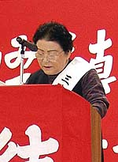

闘い一生
（録取：2005年11月6日 熊本県荒尾市における第42回三池大災害抗議集会より）

塚本ミスエさんは熊本県荒尾市在住。三池ＣＯ被災者の家族である。夫・正勝さんは、昭和17年三井鉱山に15歳で入社。
戦争と三池争議等を経て、昭和38年11月9日発生した三川鉱炭じん大爆発によりＣＯ中毒患者となる。当時36歳。以来、42年間、
何度となく死線をさまよいながらも、三井が引き起こした大災害の生き証人としてベッドの上で無言ながら訴え続けている。
そんな塚本正勝さんに代わって妻・ミスエさんが闘いの記録を高齢となった今でも語り継いでいる。
一部音声収録（時間 2分41秒）
今年もまた42年目の三池大災害抗議集会を迎えることになりました。
それぞれに「職場と生活」が厳しさを増す中に、さまざまな困難を乗り越え本集会に参加していただきまして本当にありがとう
ございます。
今年は終戦後60年の節目になります。
夫・正勝は戦火も激しい昭和17年三井鉱山に15歳で入社して、1年後の18年には志願兵として鹿児島の鹿屋特攻基地に送られま
した。16歳でした。元気そのものでした。健康優良児だったと思います。
そして2年後に終戦となりました。18歳の夏でした。身も心もボロボロになって帰ってきたと聞きました。
そして、戦後の混乱の中で私たちの生活がスタートしました。
戦後復興は石炭にありという呼び声に、米の飯と社宅に惹かれて集まった炭鉱住宅街でした。3万人を超える一大産業都市になり
ました。ささやかながらも米がいただける思いにホッとする間もなく、朝鮮動乱ぼっ発は、増産に次ぐ増産の影で再び犠牲者を重
ねることになりました。人々の心もまだまだ荒廃の途上にありました。
朝鮮動乱と共にレッドパージは全国を襲い、賃下げとさらなる人員整理と、年毎に激しくなっていきました。
昭和27年の63スト、その翌年には首切り反対闘争として113日におよぶ長期ストとなりました。初めて経験する家族ぐるみの闘い
でした。それまではデモの隊列にエプロン掛けの主婦たちの姿を見たときは「なんごつじゃろか」と不思議な思いで眺めていたもの
です。それまでに見てきたことは「日の丸」の旗をかついで出征兵士を見送る隊列だけでしたから無理もありません。
夫は坑内労働の割には賃金は上がりませんでした。災害は相変わらず続き、多くの犠牲者が出ました。そんな暮しの中から主婦会
が結成されました。激しい会社の妨害をおしての闘いでした。いろいろな行動、集会、ストライキの体験と積み上げの中から、労働
者の妻として、ひとりの女性としての生き方を自覚していきました。
貧しいながらも「家族の暮し」を夢に、みんなが懸命に、必死に生きた時代であったと思います。
それから6年、三池闘争の始まりでした。
313日の長き闘いを終えたあとに、私にはさらなる闘いが待っていました。
能率の悪いヤマはつぶす、条件の良いヤマは残してさらなる能率向上をせよ、という政府のスクラップ・アンド・ビルドという
石炭政策を背景にした、三井鉱山の容赦のない合理化強行は、石炭の増産と共に、労働者の犠牲も増大していきました。極端な差別
政策と保安無視の増産態勢の矛盾と欺まんは飽和状態に達し、あの三川鉱炭じん爆発を引き起こしたのです。起こるべきして起きた
人災であると怒りを込めて訴えます。
1963年11月9日、午後3時15分、戦後最大の惨事となった三川鉱炭じん爆発の轟音は、大牟田、荒尾の市中を揺るがしました。暗く、
熱い坑道に横たわった無数の死体、いったい人間がこうも惨めに、かくも無残な姿で死んでよいものか、こんなことが許されてよい
のでしょうか。一瞬にして458名の生命を奪い、839名のＣＯ中毒患者を発生させました。
あれから42年が過ぎましたが、被災当時、夫は36歳でした。体重は80キロを超える頑健そのものでした。無口ながらも、心優しい
3人の子供たちのたくましい父親でした。長男が中学に進級したばかり、私たち家族にとって、これからというときでした。不当きわ
まる差別に耐えながら採炭工として働いていました。これからは新たな家族ぐるみの闘いへのスタートだったのです。
被災当時、夫は昏睡状態から数十日かかり、蘇生することができました。しかし、この42年間のこれまでに何回となく死線をさま
よう状態に至り、その都度乗り越え、今日を迎えております。今年の春頃もまた、突然身体の機能停止に陥り、医師からも覚悟を宣
告されました。これまで頑張ってきましたが、年齢的にももう限界かなと思いながらも、最後の望みを託すしかありませんでした。
言葉を失い、その意思を告げることもかなわない、ゆがんだ顔の表情のみに深い悲しみを伝えていました。先生はじめ看護スタッフの
方々の努力もさることながら、本人も、また再三再四の苦闘に耐えて、数十日後、表情は和み、まさに起死回生を遂げることができ
ました。
ひとの命の「生命力」の強さを考えさせられた思いです。それだけに人間の生命は尊く重いものです。
ＣＯ中毒に冒され、自分の肉体と闘い続けている被災者たちの苦悩と家族の奮闘は続いているのです。健康な「精神と肉体」を完
全に破壊されてしまった夫を抱えて、家族を守り家庭まで破壊されてはならない、再びこのようなことが繰り返されてはならない、
という思いが私を駆り立て強くしました。
しかし、無念ながら、42年過ぎた今日も、まだまだ繰り返されています。先のＪＲ尼崎脱線災害はその証明であり、また国鉄分割
民営化後、すでに300人を超える犠牲者を重ねていると聞いています。人間の命は尊いものです。
私たち労働者は合理化の名のもとに生命を奪われ、傷つけられています。これに対する、労働者・家族の要求は、しばしば補償と
いう名のもとにわずかな金銭で葬り去られてきました。私たちは、人間の命と、生きることの本当の尊さを資本家にぶっつけ、責任
を追及する闘いに取り組んできました。これが私たちのＣＯ闘争であったと思います。
本集会に参加していただいた仲間のみなさん、私は主人に代わって、この事実を語り続け、闘い続けます。やがて80歳を前にして、
あらためて「闘い一生」を噛み締めています。変わらぬご支援を心よりお願いしまして決意といたします。
BACK
|